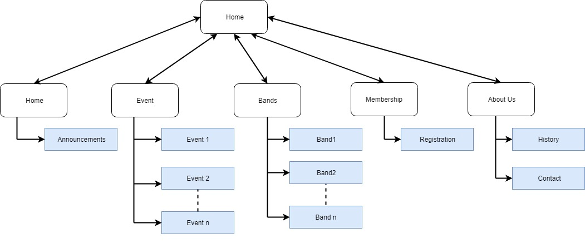

Name: Sharon Antony (jc488014)
The number of the engagment of members can be evaluated by checking the number of registration for activities such as volunteering,worshops and also through the number of signups.
Sales can be evaluated by checking the number of people who checked the concert with the number of tickets that sold out.
The number of concerts can be evaluated by the number of photos and vedios uploaded by the performers.
We "specialise in diversity" i.e. we provide performance opportunities for a very wide range of styles and genres which would otherwise have little exposure, therefore our target audience includes a wide range of ages and tastes.
The typical audience may include people with specialised tastes, e.g. classical, jazz, ethnic music, etc.
It is mainly aimed at the youth as they go well with the concert culture.If children are involved, then parents and family members predominate.
Every concert, therefore, needs a distinctive theme. Depending on the theme we can be more specific on the type of audience.
The Home page contains information about the Music center, some photos of the latest concerts also the announcments about the latest events.
Event page contains the information about the events.
Bands page contain the information about different bands.
Membership page helps new members to register.
About page givs the history of the music center and the contact infromation.
 ...